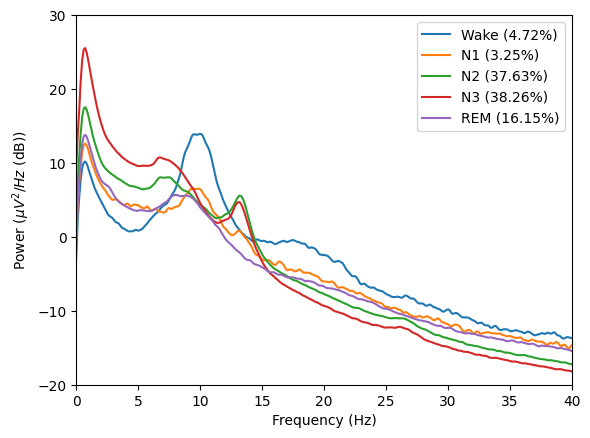
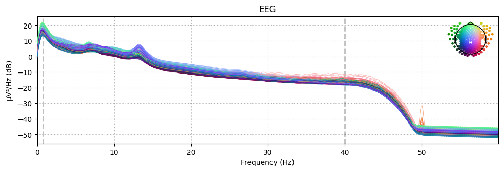
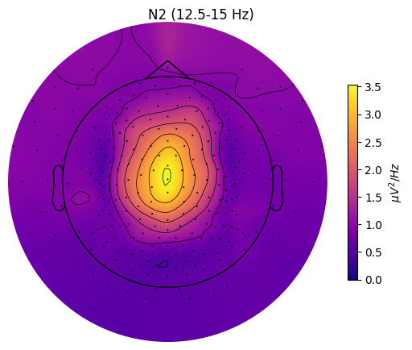
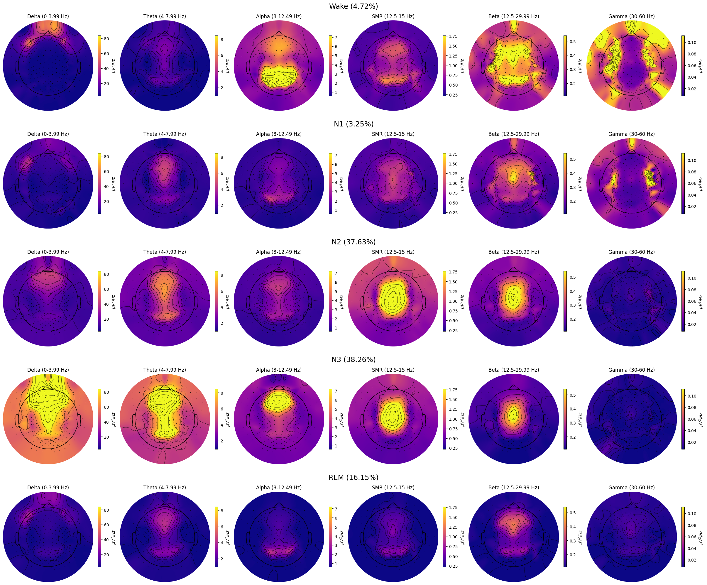

Grand spectral analyses#
from sleepeeg.pipeline import SpectralPipe, GrandSpectralPipe
subjects = ['EL3001', 'EL3003', 'EL3005']
pipes = [
SpectralPipe(
# can be any type of eeg file that MNE's read_raw() function supports.
path_to_eeg=f"C:/Users/Gennadiy/Documents/data/{subject}/after_ica_raw.fif",
# A directory you want the results to be saved in.
output_dir=f"C:/Users/Gennadiy/Documents/data/{subject}",
# Point-per-row type of hypnogram
path_to_hypno=f"C:/Users/Gennadiy/Documents/data/{subject}/staging.txt",
hypno_freq=1, # Hypnogram's sampling frequency (visbrain's hypnograms default to 1)
) for subject in subjects
]
Opening raw data file C:\Users\Gennadiy\Documents\data\EL3001\after_ica_raw.fif...
Range : 0 ... 1994499 = 0.000 ... 7977.996 secs
Ready.
Opening raw data file C:\Users\Gennadiy\Documents\data\EL3001\after_ica_raw-1.fif...
Range : 1994500 ... 3988999 = 7978.000 ... 15955.996 secs
Ready.
Opening raw data file C:\Users\Gennadiy\Documents\data\EL3001\after_ica_raw-2.fif...
Range : 3989000 ... 5983499 = 15956.000 ... 23933.996 secs
Ready.
Opening raw data file C:\Users\Gennadiy\Documents\data\EL3001\after_ica_raw-3.fif...
Range : 5983500 ... 5985607 = 23934.000 ... 23942.428 secs
Ready.
Hypnogram is SHORTER than data by 0.43 seconds. Padding hypnogram with last value to match data.size.
Opening raw data file C:\Users\Gennadiy\Documents\data\EL3003\after_ica_raw.fif...
Range : 0 ... 1994499 = 0.000 ... 7977.996 secs
Ready.
Opening raw data file C:\Users\Gennadiy\Documents\data\EL3003\after_ica_raw-1.fif...
Range : 1994500 ... 3988999 = 7978.000 ... 15955.996 secs
Ready.
Opening raw data file C:\Users\Gennadiy\Documents\data\EL3003\after_ica_raw-2.fif...
Range : 3989000 ... 5983499 = 15956.000 ... 23933.996 secs
Ready.
Opening raw data file C:\Users\Gennadiy\Documents\data\EL3003\after_ica_raw-3.fif...
Range : 5983500 ... 6961683 = 23934.000 ... 27846.732 secs
Ready.
Hypnogram is SHORTER than data by 0.74 seconds. Padding hypnogram with last value to match data.size.
Opening raw data file C:\Users\Gennadiy\Documents\data\EL3005\after_ica_raw.fif...
Range : 0 ... 2039999 = 0.000 ... 8159.996 secs
Ready.
Opening raw data file C:\Users\Gennadiy\Documents\data\EL3005\after_ica_raw-1.fif...
Range : 2040000 ... 4079999 = 8160.000 ... 16319.996 secs
Ready.
Opening raw data file C:\Users\Gennadiy\Documents\data\EL3005\after_ica_raw-2.fif...
Range : 4080000 ... 5785273 = 16320.000 ... 23141.092 secs
Ready.
Hypnogram is SHORTER than data by 0.1 seconds. Padding hypnogram with last value to match data.size.
grand_pipe = GrandSpectralPipe(
pipes=pipes, output_dir="C:/Users/Gennadiy/Documents/data/grand"
)
grand_pipe.compute_psds_per_stage(
# A dict describing stages and their indices in the hypnogram file.
sleep_stages={"Wake": 0, "N1": 1, "N2": 2, "N3": 3, "REM": 4},
# Rereferencing to apply. Can be list of str channels or "average".
# If None, will not change the reference.
reference="average",
method="welch", # welch or multitaper
fmin=0, # Lower frequency bound.
fmax=60, # Upper frequency bound.
picks="eeg", # Channels to compute the PSD for.
reject_by_annotation=True, # Whether to reject epochs annotated as BAD.
save=True, # Whether to save the average PSD hdf5 file for each sleep stage.
overwrite=True, # Whether to overwrite hdf5 files if there are any.
n_jobs=-1, # n_jobs, refer to the MNE documentation.
verbose=False, # verbose, refer to the MNE documentation.
# Additional arguments passed to the PSD computing method, i.e., welch or multitaper:
n_fft=2048,
n_per_seg=1024,
n_overlap=512,
window="hamming",
)
Reading 0 ... 5985607 = 0.000 ... 23942.428 secs...
EEG channel type selected for re-referencing
Applying average reference.
Applying a custom ('EEG',) reference.
Setting 289559 of 5985608 (4.84%) samples to NaN, retaining 5696049 (95.16%) samples.
Setting 289559 of 5985608 (4.84%) samples to NaN, retaining 5696049 (95.16%) samples.
Setting 289559 of 5985608 (4.84%) samples to NaN, retaining 5696049 (95.16%) samples.
Setting 289559 of 5985608 (4.84%) samples to NaN, retaining 5696049 (95.16%) samples.
Setting 289559 of 5985608 (4.84%) samples to NaN, retaining 5696049 (95.16%) samples.
Reading 0 ... 6961683 = 0.000 ... 27846.732 secs...
EEG channel type selected for re-referencing
Applying average reference.
Applying a custom ('EEG',) reference.
Setting 483728 of 6961684 (6.95%) samples to NaN, retaining 6477956 (93.05%) samples.
Setting 483728 of 6961684 (6.95%) samples to NaN, retaining 6477956 (93.05%) samples.
Setting 483728 of 6961684 (6.95%) samples to NaN, retaining 6477956 (93.05%) samples.
Setting 483728 of 6961684 (6.95%) samples to NaN, retaining 6477956 (93.05%) samples.
Setting 483728 of 6961684 (6.95%) samples to NaN, retaining 6477956 (93.05%) samples.
Reading 0 ... 5785273 = 0.000 ... 23141.092 secs...
EEG channel type selected for re-referencing
Applying average reference.
Applying a custom ('EEG',) reference.
Setting 295083 of 5785274 (5.10%) samples to NaN, retaining 5490191 (94.90%) samples.
Setting 295083 of 5785274 (5.10%) samples to NaN, retaining 5490191 (94.90%) samples.
Setting 295083 of 5785274 (5.10%) samples to NaN, retaining 5490191 (94.90%) samples.
Setting 295083 of 5785274 (5.10%) samples to NaN, retaining 5490191 (94.90%) samples.
Setting 295083 of 5785274 (5.10%) samples to NaN, retaining 5490191 (94.90%) samples.
Overwriting existing file.
Overwriting existing file.
Overwriting existing file.
Overwriting existing file.
Overwriting existing file.
grand_pipe.plot_psds(
picks=["E101"],
psd_range=(-20, 30), # Y axis limits
freq_range=(0, 40), # X axis limits
dB=True,
xscale="linear", # Matplotlib xscale. Can be {"linear", "log", "symlog", "logit", ...} or ScaleBase
axis=None,
save=True, # Whether to save the plot as a png file.
)

_ = grand_pipe.psds["N2"].plot(picks="data", exclude="bads", show=False)

You can access the grand average PSD through grand_pipe and the per-subject psds through corresponding pipe objects.
grand_pipe.psds["REM"].get_data(), pipes[0].psds["REM"].get_data()
(array([[4.69857839e-12, 1.79456974e-11, 3.61157755e-11, ...,
1.00640457e-17, 9.81560547e-18, 1.00051710e-17],
[3.97472019e-12, 1.49298515e-11, 3.00325522e-11, ...,
9.92335126e-18, 9.53586582e-18, 9.84580969e-18],
[2.68081298e-12, 9.90621801e-12, 1.97312290e-11, ...,
8.89591636e-18, 8.46334406e-18, 8.83593949e-18],
...,
[1.20806760e-12, 4.15354853e-12, 8.18965590e-12, ...,
4.69285805e-18, 4.38911185e-18, 4.67370012e-18],
[7.78584883e-13, 2.65237487e-12, 5.19058999e-12, ...,
3.77426282e-18, 3.49693586e-18, 3.75647953e-18],
[8.62884238e-13, 2.80684442e-12, 5.67022416e-12, ...,
9.36475558e-18, 9.32532987e-18, 9.28155120e-18]]),
array([[1.12159730e-11, 4.38017156e-11, 8.88548338e-11, ...,
1.96832398e-17, 1.95389615e-17, 1.95760779e-17],
[8.95263632e-12, 3.43570880e-11, 6.96787919e-11, ...,
1.71872863e-17, 1.68570002e-17, 1.70656727e-17],
[4.74297373e-12, 1.77798781e-11, 3.64199309e-11, ...,
1.25137941e-17, 1.22674078e-17, 1.24267604e-17],
...,
[2.25152861e-12, 7.71929824e-12, 1.52139004e-11, ...,
6.79783646e-18, 6.05313229e-18, 6.77141442e-18],
[1.00362474e-12, 3.38765289e-12, 6.70567094e-12, ...,
4.29685872e-18, 3.60047124e-18, 4.27157499e-18],
[1.29844979e-12, 4.23318325e-12, 8.61794204e-12, ...,
1.20020892e-17, 1.14591497e-17, 1.18802093e-17]]))
grand_pipe.plot_topomap(
stage="N2", # Stage to plot topomap for.
band={"SMR": (12.5, 15)}, # Band to plot topomap for.
# Should contain at least index of the provided "stage".
dB=False, # Whether to transform PSD to dB/Hz
axis=None, # Whether to plot on provided matplotlib axis.
save=True, # Whether to save the plot as a file.
topomap_args=dict(cmap="plasma"), # Arguments passed to mne.viz.plot_topomap().
cbar_args=None, # Arguments passed to plt.colorbar().
)

grand_pipe.plot_topomap_collage(
# Bands to plot topomaps for.
bands={
"Delta": (0, 3.99),
"Theta": (4, 7.99),
"Alpha": (8, 12.49),
"SMR": (12.5, 15),
"Beta": (12.5, 29.99),
"Gamma": (30, 60),
},
# Tuple of strs or "all", e.g., ("N1", "REM") or "all" (plots all "sleep_stages").
stages_to_plot="all",
dB=False, # Whether to transform PSD to dB/Hz.
low_percentile=5, # Set min color value by percentile of the band data.
high_percentile=95, # Set max color value by percentile of the band data.
fig=None, # Instance of plt.Figure, a new fig will be created if None.
save=True, # Whether to save the plot as a file.
topomap_args=dict(cmap="plasma"), # Arguments passed to mne.viz.plot_topomap().
cbar_args=None, # Arguments passed to plt.colorbar().
)

grand_pipe.parametrize(
picks=['E101'], # Channels to use, if multiple channels are provided, their PSDs will be averaged.
freq_range=[0.5, 40], # Range of frequencies to parametrize.
# Whether to average psds over channels.
# If False and more than one channel is provided,
# will be averaged over subjects.
average_ch=False,
)
c:\Users\Gennadiy\Documents\eeg-processing-pipeline\sleepeeg\pipeline.py:824: DeprecationWarning:
The `fooof` package is being deprecated and replaced by the `specparam` (spectral parameterization) package.
This version of `fooof` (1.1) is fully functional, but will not be further updated.
New projects are recommended to update to using `specparam` (see Changelog for details).
from fooof import FOOOFGroup
Running FOOOFGroup across 3 power spectra.
Running FOOOFGroup across 3 power spectra.
Running FOOOFGroup across 3 power spectra.
Running FOOOFGroup across 3 power spectra.
Running FOOOFGroup across 3 power spectra.
grand_pipe.fooofs['N2'].report()
Running FOOOFGroup across 3 power spectra.
==================================================================================================
FOOOF - GROUP RESULTS
Number of power spectra in the Group: 3
The model was run on the frequency range 0 - 40 Hz
Frequency Resolution is 0.12 Hz
Power spectra were fit without a knee.
Aperiodic Fit Values:
Exponents - Min: 2.041, Max: 2.170, Mean: 2.108
In total 12 peaks were extracted from the group
Goodness of fit metrics:
R2s - Min: 0.992, Max: 0.997, Mean: 0.995
Errors - Min: 0.038, Max: 0.062, Mean: 0.049
==================================================================================================
grand_pipe.fooofs['N2'].get_fooof(ind=0).report()
==================================================================================================
FOOOF - POWER SPECTRUM MODEL
The model was run on the frequency range 0 - 40 Hz
Frequency Resolution is 0.12 Hz
Aperiodic Parameters (offset, exponent):
-10.1770, 2.1704
4 peaks were found:
CF: 7.44, PW: 1.057, BW: 3.33
CF: 10.48, PW: 0.618, BW: 1.44
CF: 13.23, PW: 0.935, BW: 2.30
CF: 15.61, PW: 0.322, BW: 8.49
Goodness of fit metrics:
R^2 of model fit is 0.9960
Error of the fit is 0.0476
==================================================================================================

from fooof.analysis import get_band_peak_fg
smr_peaks = get_band_peak_fg(grand_pipe.fooofs['N2'], band=[12.5, 15])
smr_peaks
array([[13.23458984, 0.93549044, 2.29860078],
[12.50550038, 0.95318353, 1.53120404],
[13.43685661, 1.36214628, 1.45631969]])